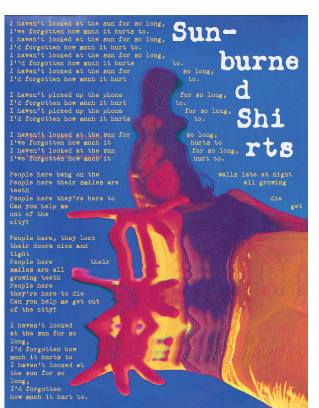
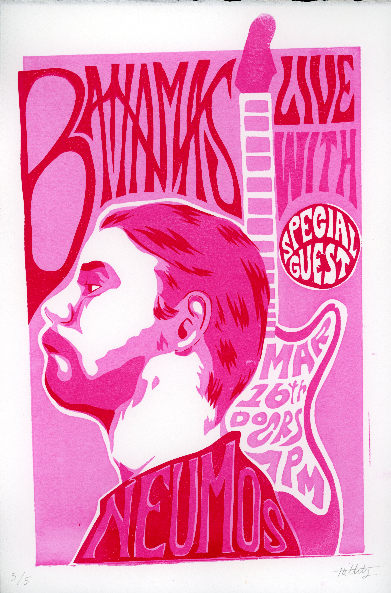

Scroll

Waiting for the Bus December 2021, Digital Portrait
A self portrait.
Portrait of Finn Wolfhard 2019, Digital Art
A digital pencil sketch of actor Finn Wolfhard drawn from a reference photo.

Sunburned Shirts December 2021, Digital Poster
A Photoshop and Illustrator project, part of my Intro to Design final.

Bahamas March 2022, 3-Color Screenprints
A poster design I created based on a concert for Bahamas in Seattle, March 2022.

Portrait of Jasmine Kurakova 2019, Digital Art
A portrait/sketch of the artist Jasmine Kurakova.

Design in the '60s October 2021, Digital Poster
Project for my History of Graphic Design class.

Selfie! Gif February 2022, Digital Gif
Project for my Digital Tools and Methods class.

Riot Grrrl: music, design, and zine culture December 2021, Mixed Media Zine
Click
here to read my zine about riot grrrl culture!
"I am the Train" May 2022, Digital Animation
My Digital Tools and Methods final. A film about growing up.

Skater 2019, Digital Art
Just a doodle.